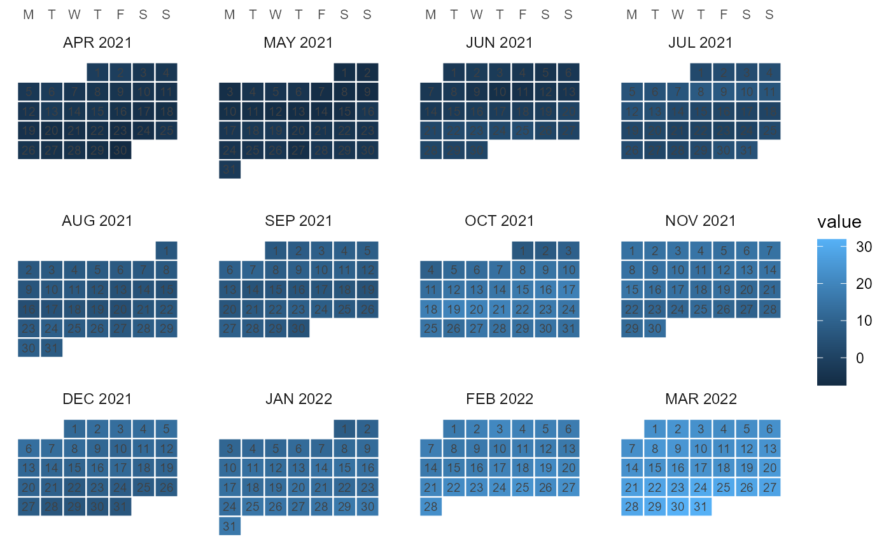

Draws the calendar as a wall calendar: one facet per month (in member
order – April first for the fy04_* fiscal calendars), day cells in
a week grid, weeks top-down. With data, day cells are filled by the
aggregated value; without, a plain calendar (day numbers only).
Usage
calendar_wall_plot(
x,
data = NULL,
z = NULL,
year = NULL,
arrange = c("weekday", "sequence"),
week_start = "MON",
fun = mean,
label = TRUE,
key = NULL,
...
)Arguments
- x
A
Calendarwith a day-resolution timeframe (YDAYorMDAY). Sub-daily timeframes are collapsed to the day layer viaprune_calendar().- data
Optional
data.frameof values to fill the day cells.- z
Name of the numeric value column of
data.- year
Integer model year (required for the weekday arrangement;
NULLfalls back to"sequence"with a message).- arrange
"weekday"or"sequence"(see above).- week_start
Weekday the week starts on: one of
"MON".."SUN"(default"MON", ISO).- fun
Aggregator collapsing multiple observations (sub-daily timeslices, repeated dates) into one day cell. Default
mean.- label
Draw day-of-month numbers (default
TRUE).- key
Key column of
data;NULLauto-detects.- ...
Passed to
ggplot2::theme()viatheme_calendar().
Details
data may be keyed by timeslice (day-level IDs directly; finer IDs
– e.g. hours of d365_h24 – roll up into their day cell) or by
datetime (mapped through datetime_to_timeslice() on the day
layer). The key column is auto-detected (timeslice, else the first
POSIXct/Date column) unless key= names it.
Examples
if (requireNamespace("ggplot2", quietly = TRUE)) {
# plain wall calendar for 2021
calendar_wall_plot(calendar("m12_md365"), year = 2021)
# daily data on a fiscal wall (April..March facets)
cal <- calendar("fy04_d365")
x <- data.frame(
timeslice = S7::prop(cal, "leaftable")$timeslice,
v = cumsum(stats::rnorm(365))
)
calendar_wall_plot(cal, x, z = "v", year = 2021)
}
